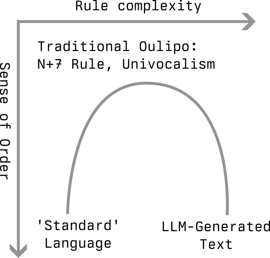

Ouvroir de Littérature Potentielle or Oulipo has been defined as “the search for new structures, which may be used by writers in any way they see fit,” (Motte 1998, p2–3). For millennia, authors have been guided by formal constraints; From the alliterative verse of the 3000 year old Beowolf, to the syllabic rigidity of Japanese haikus. By formalising a number of individual vocations, the original Oulipo writers in the early 1960s were embarking on the revitalisation of language generation in search of discovering something deeper, sound familiar?
In order to define/identify new structures, writers in France turned to automated transformation techniques. These often instantiated as rules or constraints, such as not using the letter e, replacing every noun with the seventh next noun in the dictionary (S+7 rule), or only using a single vowel letter. As the originators of Oulipo explored ways to manipulate language and text in search of new structures, they turned to mathematics for inspiration, thus leading to the final vocation; the transposition of mathematics to words. Naturally the extension was made to computers, and the combinatorial nature of language generation was quickly highlighted, as mathematician Claude Berge writes (Motte 1998, p152) :
[…] we believe, that the aid of a computer, far from replacing the creative act of the artist, permits the latter rather to liberate himself from the combinatory search, allowing him also the best chance of concentrating on this “clinamen” which, alone, can make of the text a true work of art.
Clinamen (/klaɪˈneɪmən/;) is the Latin name Lucretius gave to the unpredictable swerve of atoms, in order to defend the atomistic doctrine of Epicurus. […] it has come more generally to mean an inclination or a bias. Source
In applying combinatory literature, Oulipo writers, most notably Raymond Queneau in his 1961 work Cent Mille Milliards de Poemes (Hundred Thousand Billion Poems), have highlighted the impossible complexity of language. Elegantly embracing this complexity, Queneau simply presents the complete set of lines within a sonnet in the form of cut out strips, any combination of which can be constructed by the reader. In describing the combinatorial nature of Cent Mille Milliards de Poemes, Berge presents the following figure…
Verses act equivalently to neural network layers, and phrases correspond to discrete nodes… could we be seeing the early sparks of the use of neural networks for language modelling? Of course what is missing is the mathematical transformations from layer to layer, token embeddings, attention etcetera… but it is interesting to consider the thematic similarities of complexity, structure, and distillation (or lack thereof) of language that both members of Oulipo and machine learning researchers have successfully applied.
Given that a modern day large language model such as GPT-4 may reasonably be described as a very large set of well defined mathematical rules, specified to predict subsequent tokens, can this ever become a valid form of Oulipo practice resulting in a new structure for language to follow? In addition, multi-model models can now see and hear as well as read. According to David Chalmers these additional senses may result in fish-level consciousness in the next ten years. Consciousness aside, at the very least LLMs will appear smarter than a human by then. What are the implications for Potential Literature when a language structure can think for itself?
Unlike the output from an LLM, a haiku can be instantly recognised and verified as coming from the 5-7-5 syllabic writing structure. When the writing structure itself is visible in the output, the focus can be turned purely to what Berge refers to as the clinamen. It is here that the meaning is gained.
The difference between LLMs and well-established language structures such as a haiku is one of complexity, and language that results. By extending a series of basic mathematical transformations and rules to LLMs, a horseshoe effect is achieved. The sheer quantity of rules within an LLM reflects a removal of linguistic constraints, order is returned from chaos, and the underlying language structure is obscured.

Herein lies a paradox for the use of language models directly in producing creative outputs, as a structure of language itself. A language model is trained to produce text that is indistinguishable from text within its training distribution. However, as soon as it achieves this task, the underlying language structure becomes obscured, and the impact is lost. Would a haiku be a haiku if you couldn’t immediately infer its underlying structure?
To answer the question posted in the title: Has Machine Learning Solved Oulipo? The answer, is no. The beauty of Potential Literature is that by enforcing constraints and defining new structures to language, we not only place the emphasis purely on the meaning, but also enable the reader to interpret language in new ways via a sense of disorder. As a set of rules and constraints, an LLM obscures its underlying structure in a bid to ‘seem human’, the resulting structure is lost.
It is clear that the two vocations in the field of Potential Literature of defining rules and constraints for language, as well as identifying new language structures are inherently linked. However, these two objectives conflict when rule set is as flexible as it is within an LLM.
As Italo Calvino wrote in late 1967, in a remarkable foreshadowing (Motte 1998, Cybernetics and Ghosts (1967) p13-14):
The true literature machine will be one that itself feels the need to produce disorder, as a reaction against its preceding production of order: a machine that will produce avant-garde work to free its circuits when they are choked by too long a production of classicism. […]. To gratify critics who look for similarities between things literary and things historical, sociological, or economic, the machine could correlate its changes of style to the variations in certain statistical indices of production, or income, or military expenditure, or the distribution of decision-making powers. That indeed will be the literature that corresponds perfectly to a theoretical hypothesis: it will, at last, be the literature.
Calvino I’m sure would argue that we have the alignment of LLMs set up wrong to produce true literature, and how would Raymond Queneau respond to the combinatorial possibilities of large-language models? Cent Mille Milliards de Poemes can be seen as analogous to a partially trained neural network itself, as a mathematical object. There is beauty in the disorder of the relationship between tokens, and the rules that can be combined to produce language. However as soon as an output is produced and the combinatorics collapses, like a phantom, the structure is obscured and the meaning disappears.